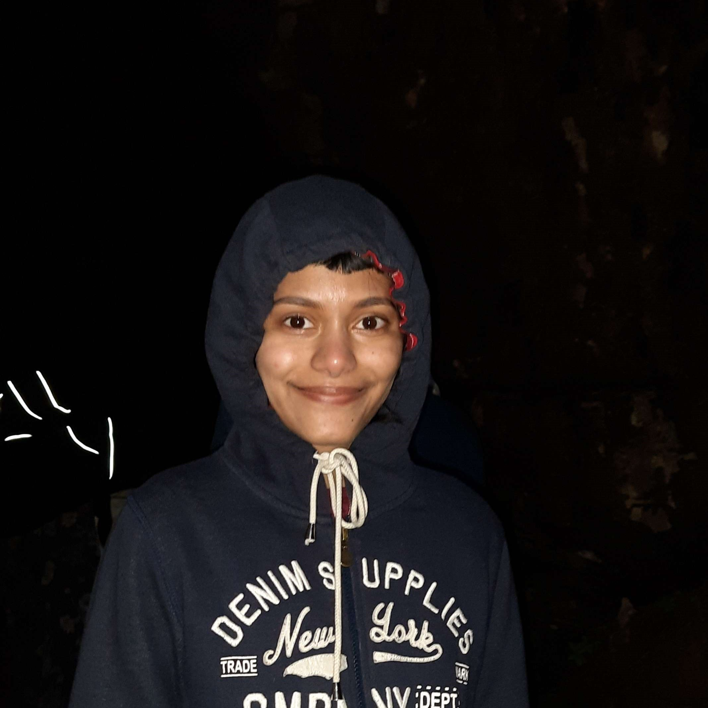

I like learning languages. I picked up some German (~B1) over the past few years and am currently learning a couple more.
I love cooking(🗣‼) and eating so send me your favorite food recommendations and recipes! Someday, I will take better food photos and perhaps post them...
I'm @rxlnja on Twitter. I try to keep it restricted to my academic experiences but you know how Twitter gets :) Also on BlueSky, @rxlnj.bsky.social.